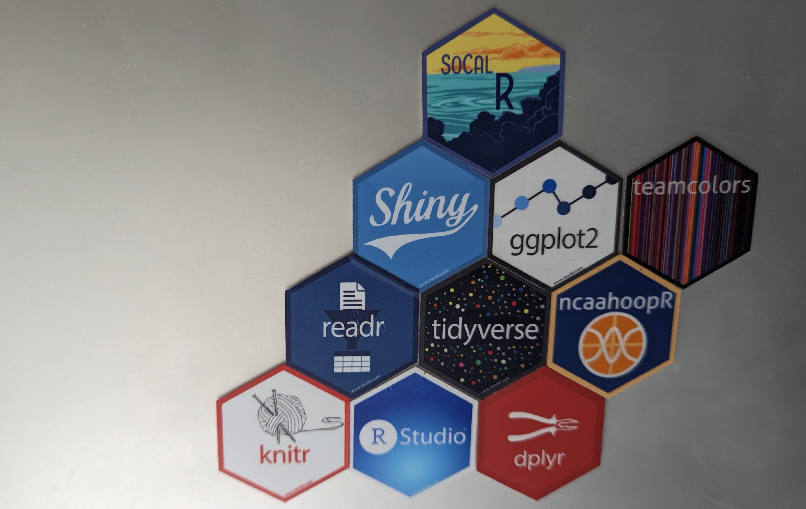

Ask anybody who has worked with me, they’ll tell you I’m the king of underpromising then overdelivering.
I’m hoping that turns out to be the case with this shiny new Quarto portfolio site and blog I built.1

Here is what I’m hoping to accomplish:
Watch one, do one, teach one: I’m cribbing this mentality from the talented nurses I spend my workday serving. I began learning R back in 2018 as part of my Business Analytics master’s program. With a few years of experience under my belt, it’s time to pay forward what I learned from those a few steps ahead of me then.
Get some healthcare example cases out there: Maybe I’m just looking in the wrong places, but it’s hard to find direct parallels to things I’m doing around the hospital online. That likely has to do with HIPAA hurdles. But I’m going to start looking for some available mock hospital data and putting together some work with those to give people interested in a healthcare data career a taste of what they can expect. So if you know of any mock hospital data OK for blogging examples with, let me know. Otherwise, I’ll be digging into charlatan to try my hand at creating my own fake dataset.
Learn what other R folks are up to: Although I’ve changed industries, I’m still a journalist at heart. One thing I’d love to do is interview other R users about what they’re working on, either professionally or as a hobby. I foresee a rich vein of inspiration – for others as well as myself. Think of it as a podcast, but in writing.
Being a full-time employee and full-time grad student will definitely challenge how often I can post, but I’ll look for opportunities where available.
Let’s have some fun!
Footnotes
Albert Rapp’s guide was super helpful↩︎